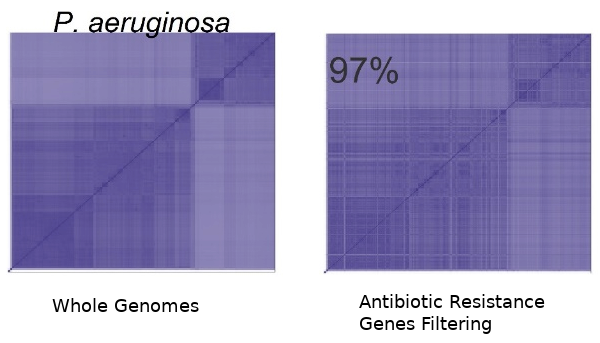

Genomes & Metagenomes Comparison with
Ray Surveyor
Maxime Déraspe, PhD Student
Corbeil Laboratory

Ray Software
- Ray Assembler : distributed genome assemblies for different NGS technologies. [1]
- Ray Meta : (meta)-genomes sequence identification with kmer coloring. [2]
- Ray Surveyor : (meta)-genomes comparison with kmer coloring. [3]
Ray - Kmers Coloring
Ray Meta and Surveyor use kmer coloring to assign an identification to each kmer.
Coloring is a design pattern to reuse the combination of genomes that are assigned to each kmer. The color design pattern is similar to hash consing or flyweight pattern.
Huge save in memory consumption.
| Genome A | Genome B | Genome C | |
|---|---|---|---|
| Genome A | A | A ^ B | A ^ C |
| Genome B | A ^ B | B | B ^ C |
| Genome C | A ^ C | B ^ C | C |
Ray Surveyor - Algorithm
Ray Surveyor main algorithm is pretty simple.
For each kmer virtual color, we increment counters for each pair of genomes contained in that virtual color.
We report those counts (of shared kmers) into a
Gram matrix.
Pseudo Code
# Iterate over each kmer
FOR each kmer in GRAPH
# Iterage over each pair of color from the virtual_color
FOR each GENOME_1 in KMER_VIRTUAL_COLOR
FOR each GENOME_2 in KMER_VIRTUAL_COLOR[GENOME_1:END]
GRAM_MATRIX[GENOME_1][GENOME_2] += 1
# Set also the lower triangle of the Gram Matrix
IF GENOME_1 != GENOME_2
GRAM_MATRIX[GENOME_2][GENOME_1] += 1
ENDFOR
ENDFOR
ENDFOR
Question : why does the internal loops start at genome_1 ?
Because we only need to compute the upper triangle !
Gram Matrix
| Genome 1 | Genome 2 | Genome 3 | |
|---|---|---|---|
| Genome 1 | 2001 | 112 | 113 |
| Genome 2 | 112 | 2002 | |
| Genome 3 | 113 | 123 | 2003 |
Question : What are the numbers on the diagonal ?
Answer : The size of genomes in kmers.
Size in base pairs = size_in_kmers + kmer_length - 1
Gram Matrix - Properties
The Gram matrix is symmetrical
(Only compute upper triangle)
The Gram matrix can be normalized (diagonal = 1)
The Gram matrix can be transformed into a distance matrix (diagonal = 0) based on a distance metric
(Euclidean, Cosine, Canberra, etc..)
Distance Matrix
Can be use for clustering
(hierarchical cluster dendrograms)
Can be use for basic phylogenies
(UPGMA or Neighbor-Joining tree)
Ray Surveyor - Kmers Filtering
Filtering kmers in Ray Surveyor allow comparison of (meta)-genomes based on an external datasets.
We can build filter with any sequence datasets.
Sequence datasets are usually built from genes with similar characteristics
(Antibiotic Resistance Genes, Virulence factors, etc.).
Filtering Functions
Filter-in : include only the kmers from the filtering dataset.
Filter-out : exclude all the kmers from the filtering dataset.
We can also combine different filters.
| Filtering-IN A | Genome B | Genome C |
|---|---|---|
| Genome B | A ^ B | A ^ B ^ C |
| Genome C | A ^ B ^ C | A ^ C |
| Filtering-OUT A | Genome B | Genome C |
|---|---|---|
| Genome B | B \ (A^B) | B^C \ (A^B^C) |
| Genome C | B^C \ (A^B^C) | C \ (A^C) |
Cophenetic correlation is used to give a similarity score between clusters from whole genomes (all kmers) and filtered genomes (kmers from antibiotic resistance genes).
Question : explanation for this high correlation ?
Answer : Intrinsic resistance in P. aeruginosa
As a land surveyor and its theodolite,
Ray Surveyor filtering enables comparison of (meta)-genomes from different angles.
Ray Surveyor - Usage
Ray Surveyor has been used to compare large population of bacterial genomes and metagenomes.
The similarity measure is based on the number of shared kmers between genome sequences.
It also provides a filtering functionality to compare the (meta)-genomes based on an external datasets
(e.g. gene sequences associated with a specific phenotype).
Bacterial Genomes Comparison with Filtering
 Déraspe, M., Raymond, F., Boisvert, S., Culley, A., Roy, P. H., Laviolette, F., & Corbeil, J. (2017). Phenetic Comparison of Prokaryotic Genomes Using k-mers. Molecular Biology and Evolution, 34(10), 2716–2729.
Déraspe, M., Raymond, F., Boisvert, S., Culley, A., Roy, P. H., Laviolette, F., & Corbeil, J. (2017). Phenetic Comparison of Prokaryotic Genomes Using k-mers. Molecular Biology and Evolution, 34(10), 2716–2729.
Gut Metagenomes Comparison
Before and After Antibiotics Treatment
Ray Surveyor - Tutorial
Time for a little hands-on exercice !
- Github repositories:
- github.com/zorino/ray
- github.com/zorino/raysurveyor-tutorial
- Dependencies:
- gcc >= 4.8.1 (c++ 11)
- openmpi or mpich (MPI for parallelism)
- python3 and miniconda
Ray Surveyor - Installation
# Dependencies:
#- gcc >= 4.8.1 (c++ 11)
#- openmpi / mpich (MPI for parallelism)
#- python 3 + anaconda (for Surveyor scripts)
# Ray Installation
git clone https://github.com/zorino/RayPlatform.git;
git clone https://github.com/zorino/ray.git;
cd ray;
make PREFIX=`pwd`/BUILD MAXKMERLENGTH=64 HAVE_LIBZ=y HAVE_LIBBZ2=y ASSERT=n;
make install;
cd ../
# Ray Surveyor Tutorial
git clone https://github.com/zorino/raysurveyor-tutorial
cd raysurveyor-tutorial
conda env create -f surveyor_scripts/conda_env.yml
# download the microbiome dataset (#2)
wget http://perso.genome.ulaval.ca/~deraspem/microbiome-sumschool-2017/survey.res.microbiomes.tgz
tar xvf survey.res.microbiomes.tgz
Ray Surveyor - Configuration
- -k : kmer length
- -run-surveyor : flag to run surveyor (not the assembly)
- -read-sample-assembly : input fasta sequence file
- -write-kmer-matrix : output a boolean kmer matrix of presence/absence in the genomes
- -filter-[in|out]-assembly-X : add a filter to the genome comparison (fasta sequence file). X is the filter identifier.
Dataset #1
5 VIH Genomes + 2 filtering datasets
- AF069671.1 HIV-1 isolate SE7535 from Uganda, complete genome.
- AF224507.1 HIV-1 strain HIV-1wk from South Korea, complete genome.
- AY445524.1 HIV-1 clone pWCML249 from Kenya, complete genome.
- EU541617.1 HIV-1 clone pIIIB from USA, complete genome.
- GQ372986.1 HIV-1 isolate ES P1751 from Spain, complete genome.
- Filtering Datasets : Pol-Genes.fa & Gag-Genes.fa
- TODO:
- Run Ray Surveyor
- Analyse the results with the Jupyter notebook
(survey-notebook-demo.ipynb)
See raysurveyor-tutorial/survey.conf
-k 31
-run-surveyor
-output survey.res
-write-kmer-matrix
-filter-in-assembly-1 Pol-Genes_in datasets/Pol-Genes.fa
-filter-in-assembly-2 Gag-Genes_in datasets/Gag-Genes.fa
-filter-out-assembly-3 Pol-Genes_out datasets/Pol-Genes.fa
-filter-out-assembly-3 Gag-Genes_out datasets/Gag-Genes.fa
-read-sample-assembly AF069671.1 datasets/AF069671.1.fa
-read-sample-assembly AF224507.1 datasets/AF224507.1.fa
-read-sample-assembly AY445524.1 datasets/AY445524.1.fa
-read-sample-assembly EU541617.1 datasets/EU541617.1.fa
-read-sample-assembly GQ372986.1 datasets/GQ372986.1.fa
Question : How many filters in the configuration ?
3 !
Ray Surveyor - Run
cd raysurveyor-tutorial/
mpiexec -n 2 ../ray/BUILD/Ray survey.conf
# ... wait for Ray to finish
ls survey.res/Surveyor
# Expected output of the previous ls command
DistanceMatrix.global.euclidean_normalized.tsv
DistanceMatrix.global.euclidean_raw.tsv
KmerMatrix.tsv
SimilarityMatrix.filter-1.tsv
SimilarityMatrix.filter-2.tsv
SimilarityMatrix.filter-3.tsv
SimilarityMatrix.global.normalized.tsv
SimilarityMatrix.global.tsv
# Explore the files to see what's inside
less survey.res/Surveyor/KmerMatrix.tsv
less survey.res/Surveyor/SimilarityMatrix.global.tsv
Ray Surveyor - Results
Now let's analyse the results
# activate the python virtual environment
# ..with surveyor_scripts dependencies
cd raysurveyor-tutorial/
source activate raysurveyor
jupyter notebook --NotebookApp.iopub_data_rate_limit=1000000000
Visit http://localhost:8080 in your browser
Open survey-notebook-demo.ipynb
Execute the cells with <shift-enter>
Dataset #1 (VIH)
Open survey-notebook-demo.ipynb
Execute the cells with <shift-enter>
Dataset #2
23 patients that had an antibiotic treatment (Cefprozil)*
6 controls (patients 6, 7, 8, 23, 25, and 38)
- TODO:
- Complete some code in the Jupyter notebook
(survey-notebook-microbiome.ipynb) - Analyse the results with the Jupyter notebook
Dataset #2 (Microbiomes)
Open survey-notebook-microbiome.ipynb
Execute the cells with <shift-enter>
Complete missing code for the 3rd filtered matrix
Answer questions in the notebook

Frequently Asked Questions
What is the best kmer length for analysis ?
It depends of the data. The kmer length can be seen as a trade-off between sensitivity and specificity. Evolutionarily distant genomes require shorter kmers to get a good signal (sensitivity) while more similar genomes benefit from larger kmer lengths for more specificity. Previous studies have shown the efficiency of 31-mers in bacterial genome clustering and its robustness in bacterial metagenome profiling.
Limitations of the filtering functionality ?
A limitation of the filtering approach is that it involves the gathering of sequence data that adequately represents the diversity of the genes or functional category under study. A type gene dataset would generally not be sufficiant, as the filtering dataset must contains enough sequence variants to grasp the dissimilarity between close genomes with a limited number of signal (shared kmers). This issue should be alleviated by better filtering datasets as more sequences and better annotations become available in public databases.
What is the difference between Ray Surveyor and other kmer counters ?
Counting kmers is one of the most trivial task in bioinformatics, and there is a lot of very efficient kmer counters out there (KMC, JellyFish, MSPKmerCounter, DSK, etc.). Ray Surveyor aims to be efficient and scalable by using the Ray Meta coloring pattern. It also does more computation for you than only counting the kmers by providing a Gram matrix that is use for further analyses. Also, the filtering functionality provides a convenient way to compare (meta)-genome datasets from different angles.
Is Ray Surveyor Quantitative ?
Not from a abundance-based perspective. The kmer counts are binary - either present or absent from each (meta)-genome. So it's important to keep in mind that the comparison are based on the sequence content of the studied (meta)-genomes, rather than their relative abundances. For single bacterial genomes comparison, this has a minor impact on the results. For metagenomes, the interpretation of the results must be oriented toward the actual presence or absence of genomic content.